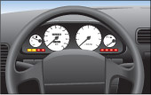
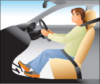
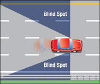
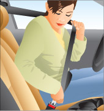
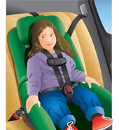
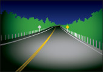
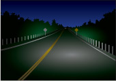

गाड़ी चलाने की तैयारी
गाड़ी चलाने से पहले, सुनिश्चित करें कि आप अपनी शारीरिक, मानसिक और भावनात्मक स्थिति, अपनी गाड़ी और उन परिस्थितियों से सहज हैं जिनमें आप गाड़ी चलाएंगे। यदि आपको इनमें से किसी के बारे में भी संदेह है, तो गाड़ी न चलाएं।
आपकी वाहन चलाने की क्षमता दिन-प्रतिदिन बदल सकती है। बीमारी, थकान, डॉक्टर द्वारा बताई गई और बिना डॉक्टर के पर्चे के ली जाने वाली दवाएं, तनाव और आपकी मानसिक या भावनात्मक स्थिति वाहन चलाने की आपकी क्षमता को काफी हद तक कम कर सकती है। वाहन चलाना शुरू करने से पहले आपको इन कारकों पर विचार करना चाहिए और जब आप वाहन चलाने के लिए पूरी तरह से सक्षम न हों तो वाहन नहीं चलाना चाहिए।
शारीरिक और मानसिक रूप से सतर्क रहें
वाहन चलाने के लिए आपका शारीरिक और मानसिक रूप से स्वस्थ होना आवश्यक है। यदि आप बीमार हैं, घायल हैं, या आपने शराब पी रखी है, या कोई ऐसी दवा ली है जिससे आपकी वाहन चलाने की क्षमता कम हो सकती है, तो वाहन न चलाएं।
थकान होने पर गाड़ी न चलाएं। गाड़ी चलाते समय आपको नींद आ सकती है, जिससे सड़क पर दूसरों की जान को खतरा हो सकता है। अगर आपको नींद नहीं भी आती है, तो भी थकान आपकी ड्राइविंग क्षमता को प्रभावित करती है। आपकी सोचने की गति धीमी हो जाती है और आप चीज़ों को ठीक से देख नहीं पाते। आपात स्थिति में, आप गलत निर्णय ले सकते हैं या सही निर्णय लेने में समय की कमी हो सकती है।
जब आप परेशान या गुस्से में हों तो गाड़ी न चलाएं। तीव्र भावनाएं आपकी सोचने और तुरंत प्रतिक्रिया करने की क्षमता को कम कर सकती हैं।
अपने वाहन को जानें

गाड़ी चलाने से पहले उसे अच्छी तरह जान लें। आजकल कई तरह की गाड़ियाँ उपलब्ध हैं, जिनमें ईंधन प्रज्वलन प्रणाली, एंटी-लॉक ब्रेक, फोर-व्हील ड्राइव और ट्रैक्शन कंट्रोल व स्टेबिलिटी कंट्रोल जैसी अलग-अलग विशेषताएं हैं। कई नई गाड़ियों में ऐसी तकनीकें होती हैं जो स्टीयरिंग, ब्रेकिंग और/या एक्सीलरेट करने में मदद करती हैं, ताकि आप अपनी लेन में बने रहें, टक्करों से बचें या उन्हें कम करें और सुरक्षित दूरी बनाए रखें। इन प्रणालियों के काम करने का तरीका, इन्हें सही ढंग से चलाने का तरीका और इनकी सीमाओं को समझने के लिए गाड़ी के मालिक का मैनुअल और गाड़ी बनाने वाली कंपनी से मिलने वाली अन्य जानकारी देखें।
आपके वाहन में चाहे जो भी तकनीक उपलब्ध हो, आपको हमेशा इस बात पर ध्यान देना चाहिए कि वे कैसे काम करती हैं, किसी असामान्य या अप्रत्याशित स्थिति में वाहन का नियंत्रण अपने हाथ में लेने के लिए तैयार रहना चाहिए, और यह समझना चाहिए कि सभी ड्राइविंग कार्यों के लिए आप ही जिम्मेदार हैं।
कठिन परिस्थितियों और स्थितियों में गाड़ी चलाने के लिए, विशेष परिस्थितियों से निपटने वाले अनुभाग को देखें।
सुनिश्चित करें कि आपको सभी नियंत्रण और उपकरण कहाँ स्थित हैं और वे क्या कार्य करते हैं, यह पता हो। जाँच लें कि सभी चेतावनी बत्तियाँ और गेज काम कर रहे हैं। यदि कोई चेतावनी बत्ती गाड़ी चलाने के बाद भी जलती रहती है, तो उस पर ध्यान दें; यह आपके वाहन में किसी गंभीर समस्या का संकेत हो सकता है।
वाइपर और वॉशर, हेडलाइट्स, हाई बीम, हीटर और डिफ्रोस्टर को बिना देखे चालू करने के लिए कंट्रोल्स को अच्छी तरह से जान लें। सड़क से नज़र हटाए बिना इन ज़रूरी कंट्रोल्स का इस्तेमाल करना सीखना ड्राइविंग का एक अहम हिस्सा है।
अपनी स्थिति में आ जाओ

गाड़ी चलाते समय सही तरीके से बैठें। ड्राइवर की सीट पर इतनी ऊंचाई पर बैठें कि स्टीयरिंग व्हील और बोनट के ऊपर से सब कुछ दिखाई दे। गाड़ी के चार मीटर आगे तक ज़मीन साफ़ दिखाई देनी चाहिए। ज़रूरत पड़ने पर मज़बूत कुशन का इस्तेमाल करें।
सुनिश्चित करें कि आप सीट पर सीधे बैठे हैं और आपकी कोहनी थोड़ी मुड़ी हुई हैं। सीट को इस तरह एडजस्ट करें कि आपके पैर आसानी से पैडल तक पहुँच सकें। अपनी बैठने की स्थिति जाँचने के लिए, ब्रेक पैडल के नीचे अपने पैरों को ज़मीन पर सपाट रखकर देखें। यदि आप बिना खिंचाव के ऐसा कर सकते हैं, तो आप सही ढंग से बैठे हैं। इससे आप सही, सीधी बैठने की स्थिति में रहते हैं और वाहन चलाते समय आपको अधिक स्थिरता मिलती है।
यदि आपके वाहन में एडजस्टेबल हेडरेस्ट है, तो सुनिश्चित करें कि यह सही ऊंचाई पर हो। टक्कर की स्थिति में सुरक्षा के लिए आपके सिर का पिछला हिस्सा हेडरेस्ट के ठीक बीच में होना चाहिए।
सुनिश्चित करें कि आगे की सीट पर गाड़ी चलाने के लिए पर्याप्त जगह हो ताकि आप ठीक से और सुरक्षित रूप से गाड़ी चला सकें। गाड़ी चलाते समय यात्रियों या सामान से गाड़ी को ज्यादा न भरें।
स्पष्ट दृश्य बनाए रखें
गाड़ी चलाते समय स्पष्ट दृष्टि बनाए रखें। खिड़कियों में ऐसी कोई चीज न लगाएं जिससे आपका दृश्य बाधित हो। आपकी गाड़ी की खिड़कियों पर कोई भी ऐसी सामग्री नहीं होनी चाहिए जिससे आपको किसी भी दिशा में देखने में बाधा हो। न ही विंडशील्ड या सामने के दरवाजे की खिड़कियों पर कोई ऐसी सामग्री होनी चाहिए जिससे कोई व्यक्ति गाड़ी के अंदर देख सके।
अपनी कमियों को पहचानें

अपने शीशों को जांचें और समायोजित करें, साथ ही अपने ब्लाइंड स्पॉट का पता लगाएं, यानी वाहन के दोनों ओर का वह क्षेत्र जहां से आप देख नहीं सकते। इन क्षेत्रों में मौजूद लोगों या साइकिल सवारों को आप शायद न देख पाएं। कुछ वाहनों में ब्लाइंड स्पॉट इतना बड़ा होता है कि वहां वाहन होने पर भी आपको दिखाई नहीं देगा।
अपने साइड मिरर को इस तरह एडजस्ट करें कि ब्लाइंड स्पॉट कम से कम हों। ज़्यादातर गाड़ियों में ब्लाइंड स्पॉट गाड़ी के पीछे बाईं और दाईं ओर होते हैं। ब्लाइंड स्पॉट को और कम करने के लिए, अंदर वाले मिरर को इस तरह सेट करें कि मिरर का सेंटर पीछे की खिड़की के सेंटर को दिखाए। सही एडजस्टमेंट के बाद आपको गाड़ी के ठीक पीछे दिखना चाहिए। बाईं ओर के साइड मिरर को सेट करने के लिए, खिड़की की तरफ झुकें और मिरर को इस तरह घुमाएँ कि आपको गाड़ी का पिछला हिस्सा साफ़ दिखाई दे। दाईं ओर के साइड मिरर को सेट करने के लिए, गाड़ी के सेंटर की तरफ झुकें और मिरर को इस तरह घुमाएँ कि आपको गाड़ी का पिछला हिस्सा साफ़ दिखाई दे। मिरर में दिखने वाली चीज़ों में ओवरलैप न होने दें। क्योंकि साइड मिरर से देखने का एंगल सीमित होता है, इसलिए ब्लाइंड स्पॉट में कुछ भी न हो, यह सुनिश्चित करने का एकमात्र तरीका है कि आप अपना सिर घुमाकर पीछे देखें।
आपको अपनी गाड़ी के ब्लाइंड स्पॉट के बारे में पता होना चाहिए। आप किसी को अपनी गाड़ी के चारों ओर चलने और शीशों में दिख रहे व्यक्ति को देखकर यह जान सकते हैं कि वे कहाँ और कितने बड़े हैं।
अपनी सीट बेल्ट जकड़ना

सीट बेल्ट का सही इस्तेमाल आपकी जान बचा सकता है। सीट बेल्ट पहनने वाले लोगों की संख्या में थोड़ी सी भी वृद्धि कई जानें बचा सकती है।
सीट बेल्ट से लैस किसी भी वाहन में यात्रा करते समय आपको हर बार सीट बेल्ट का उपयोग करना चाहिए। सभी यात्रियों को अपनी-अपनी सीट बेल्ट, चाइल्ड कार सीट या बूस्टर सीट से सीट बेल्ट बांधनी होगी।
सीट बेल्ट न लगाने वाले ड्राइवरों पर जुर्माना लगाया जा सकता है और उन्हें दो डिमेरिट पॉइंट दिए जाएंगे। 16 वर्ष से कम आयु के सभी यात्रियों के लिए सीट बेल्ट, चाइल्ड कार सीट या बूस्टर सीट सुनिश्चित न करने पर भी ड्राइवरों पर जुर्माना लगाया जा सकता है और डिमेरिट पॉइंट दिए जा सकते हैं। लेवल वन (G1) ड्राइवर केवल अपने साथ बैठे ड्राइवर को ही आगे की सीट पर बैठा सकते हैं, और उनके लिए सीट बेल्ट लगाना अनिवार्य है। नए ड्राइवरों के लिए प्रत्येक यात्री के लिए सीट बेल्ट लगाना अनिवार्य है। प्रत्येक यात्री के लिए सीट बेल्ट न लगाने वाले ड्राइवरों का लाइसेंस कम से कम 30 दिनों के लिए रद्द किया जा सकता है।
सीट बेल्ट इतनी कसकर बांधें कि दुर्घटना के दौरान आप अपनी सीट पर सुरक्षित रहें। कभी भी एक से अधिक व्यक्ति को सीट बेल्ट न बांधें; इससे दुर्घटना में गंभीर चोट या मृत्यु भी हो सकती है। कंधे की पट्टी को अपने कंधे के ऊपर से पहनें, कभी भी अपनी बगल के नीचे या अपनी पीठ के पीछे से न बांधें। कमर की पट्टी को कूल्हों के नीचे से बांधें, पेट से सटाकर नहीं।
हमेशा सीट बेल्ट का इस्तेमाल करें, यहां तक कि तब भी जब आप एयरबैग वाली जगह पर बैठे हों। एयरबैग सीट बेल्ट का विकल्प नहीं हैं। टक्कर होने पर, आपकी सीट बेल्ट आपको अपनी जगह पर स्थिर रखेगी ताकि एयरबैग आपकी सुरक्षा कर सके।
ध्यान दें: यात्रियों के लिए सबसे सुरक्षित यात्रा वाहन के अंदर, सीट बेल्ट लगाकर करना है। वाहन के बाहर, जैसे कि पिकअप ट्रक के पीछे या खींचे जा रहे ट्रेलर में यात्रा करना सुरक्षित नहीं है। दुर्घटना के दौरान वाहन से बाहर फेंके जाने से बचने के लिए यात्रियों का वाहन के अंदर सुरक्षित रहना महत्वपूर्ण है।
सीट बेल्ट के बारे में अधिक जानकारी के लिए, परिवहन मंत्रालय की वेबसाइट पर जाएं।
बाल सुरक्षा

वाहन में बच्चों की सुरक्षा के लिए, उनकी ऊंचाई, वजन और/या उम्र के अनुसार उन्हें चाइल्ड कार सीट, बूस्टर सीट या सीटबेल्ट में ठीक से बांधना आवश्यक है। शोध से पता चलता है कि सही तरीके से इस्तेमाल की गई चाइल्ड कार सीट चोट या मृत्यु की संभावना को 75 प्रतिशत तक कम कर सकती है।
एक चालक के रूप में, यह सुनिश्चित करना आपकी ज़िम्मेदारी है कि 16 वर्ष से कम आयु के सभी यात्री सीट बेल्ट, चाइल्ड कार सीट या बूस्टर सीट में ठीक से बैठे हों। ओंटारियो में, सभी चालकों को छोटे बच्चों को ले जाते समय उचित चाइल्ड कार सीट और बूस्टर सीट का उपयोग करना अनिवार्य है।
बच्चों की कार सीटों को कनाडाई मोटर वाहन सुरक्षा मानकों को पूरा करना आवश्यक है। बकल और पट्टियों को निर्माता के निर्देशों के अनुसार बांधना चाहिए। नए वाहन जिनमें बच्चों की कार सीट को सुरक्षित करने के लिए लोअर यूनिवर्सल एंकरेज सिस्टम (यूएएस) लगा होता है, उनमें सीट बेल्ट की आवश्यकता नहीं होती है। बूस्टर सीट के लिए लैप बेल्ट और शोल्डर बेल्ट का संयोजन आवश्यक है।
9 किलोग्राम (20 पाउंड ) से कम वजन वाले शिशुओं को कार में पीछे की ओर मुंह करके बैठने वाली सीट बेल्ट या यूएएस स्ट्रैप से बांधना अनिवार्य है। पीछे की ओर मुंह करके बैठने वाली सीट को हमेशा पिछली सीट पर लगाना सबसे अच्छा होता है। कभी भी ऐसी सीट पर पीछे की ओर मुंह करके बैठने वाली सीट न लगाएं जहां एयरबैग सक्रिय हो। एयरबैग खुलने पर बच्चे को गंभीर चोट लग सकती है।
9 से 18 किलोग्राम (20 से 40 पाउंड ) वजन वाले बच्चों को कार में सीटबेल्ट या यूएएस स्ट्रैप से बांधकर बिठाना अनिवार्य है; सीट का टेदर स्ट्रैप भी कार के टेदर एंकर से जुड़ा होना चाहिए। 9 किलोग्राम (20 पाउंड ) से अधिक वजन वाले बच्चे पीछे की ओर मुंह करके बैठने वाली कार सीट में बैठ सकते हैं, बशर्ते वह सीट बच्चे की ऊंचाई और वजन के अनुसार बनी हो। कार में सीट लगाते समय हमेशा निर्माता के निर्देशों का पालन करें।
बूस्टर सीटें केवल सीट बेल्ट की तुलना में 60 प्रतिशत अधिक सुरक्षा प्रदान करती हैं। इनका उपयोग प्री-स्कूल और प्राथमिक कक्षा के उन बच्चों के लिए अनिवार्य है जो आगे की ओर मुंह वाली कार सीट के लिए उपयुक्त नहीं हैं, जिनकी उम्र आठ वर्ष से कम है, जिनका वजन 18 किलोग्राम (40 पाउंड ) या उससे अधिक लेकिन 36 किलोग्राम (80 पाउंड ) से कम है, और जिनकी ऊंचाई 145 सेंटीमीटर (4 फीट, 9 इंच) से कम है। बूस्टर सीटें बच्चे को ऊपर उठाती हैं जिससे वयस्क सीट बेल्ट अधिक प्रभावी ढंग से काम करती है। बच्चे का सिर बूस्टर, वाहन की सीट या हेडरेस्ट के ऊपरी हिस्से से सहारा प्राप्त होना चाहिए। आपको लैप/शोल्डर बेल्ट के साथ बूस्टर सीट का उपयोग करना चाहिए। लैप/शोल्डर बेल्ट को इस प्रकार पहनना चाहिए कि शोल्डर बेल्ट शरीर से सटकर, कंधे के ऊपर और छाती के मध्य से होकर गुजरे, और लैप बेल्ट शरीर से सटकर कूल्हों के ऊपर से गुजरे। अपनी गाड़ी में बूस्टर सीट लगाते समय हमेशा निर्माता के निर्देशों का पालन करें, और जब बच्चा उसमें यात्रा न कर रहा हो तो बूस्टर सीट को सीटबेल्ट से सुरक्षित कर लें, या उसे गाड़ी से हटा दें।
यदि आपके वाहन में केवल लैप बेल्ट हैं, तो बच्चे को केवल लैप बेल्ट से ही सुरक्षित करें। बूस्टर सीट के साथ कभी भी अकेले लैप बेल्ट का उपयोग न करें।
बच्चे सीटबेल्ट पहनना तब शुरू कर सकते हैं जब वे इसे ठीक से पहनना सीख जाएं (कूल्हों पर सपाट लैप बेल्ट, छाती के बीचोंबीच और कंधे पर शोल्डर बेल्ट), और यदि निम्नलिखित में से कोई एक मानदंड पूरा होता है:
- बच्चा आठ साल का हो गया है।
- बच्चे का वजन 36 किलोग्राम (80 पाउंड ) या उससे अधिक है।
- बच्चे की लंबाई 145 सेंटीमीटर (4 फीट 9 इंच) या उससे अधिक है।
किसी भी बच्चे को ऐसे एयरबैग के सामने न बिठाएं जो बंद न हो। 13 वर्ष से कम आयु के बच्चे के लिए सबसे सुरक्षित स्थान पिछली सीट है।
वाहन में रखी ढीली वस्तुओं को हमेशा कार्गो नेट या पट्टियों से सुरक्षित करें, या उन्हें ट्रंक में रख दें ताकि टक्कर या अचानक रुकने की स्थिति में वे यात्रियों को चोट न पहुंचाएं।
बच्चे की सुरक्षा सुनिश्चित करने के लिए कार सीट का सही तरीके से लगाना बहुत ज़रूरी है। कार सीट को सही तरीके से लगाने के बारे में जानकारी के लिए आप अपने स्थानीय स्वास्थ्य केंद्र से संपर्क कर सकते हैं, या फिर किसी स्थानीय कार सीट क्लिनिक में जा सकते हैं जहाँ प्रमाणित तकनीशियन सीट लगाने में आपकी मदद करेंगे।
बच्चों की कार सीटों के बारे में अधिक जानकारी के लिए परिवहन मंत्रालय की वेबसाइट पर जाएं।
ध्यान दें: इस्तेमाल की हुई चाइल्ड कार सीट खरीदते समय सावधानी बरतें। यह सुनिश्चित करें कि सीट के साथ निर्माता के सभी निर्देश और आवश्यक उपकरण मौजूद हों; उसमें किसी प्रकार की खराबी या क्षति के लक्षण न हों; वह कभी किसी दुर्घटना में शामिल न रही हो; उसे वापस मंगाया न गया हो; और निर्माता द्वारा निर्धारित उसकी उपयोगी जीवन अवधि समाप्त न हुई हो।
सीट बेल्ट और बच्चों की कार सीटें जान बचाती हैं
कार में सीट बेल्ट और बच्चों की सीट लगाने से दुर्घटनाओं में चोट लगने या मृत्यु होने का खतरा कम हो जाता है।
- सीट बेल्ट आपको दुर्घटना के दौरान वाहन के अंदर सुरक्षित रखने और वाहन पर नियंत्रण बनाए रखने में मदद करती हैं। दुर्घटना में वाहन से बाहर फेंके जाने वाले लोगों के जीवित बचने की संभावना बहुत कम होती है।
- सीट बेल्ट आपके सिर और शरीर को वाहन के अंदर या वाहन में बैठे किसी अन्य व्यक्ति से टकराने से बचाती है। जब कोई वाहन किसी ठोस वस्तु से टकराता है, तो अंदर बैठे लोग तब तक हिलते रहते हैं जब तक कोई चीज़ उन्हें रोक न दे। यदि आपने सीट बेल्ट नहीं पहनी है, तो स्टीयरिंग व्हील, विंडशील्ड, डैशबोर्ड या कोई अन्य व्यक्ति आपको रोक सकता है। इस तरह की टक्कर अक्सर गंभीर चोट का कारण बनती है।
- दुर्घटनाओं में आग लगना या पानी में डूब जाना दुर्लभ घटनाएं हैं। यदि ऐसा होता भी है, तो सीट बेल्ट आपको होश में रखने में मदद करती हैं, जिससे आपको वाहन से बाहर निकलने का मौका मिल जाता है।
- अचानक ब्रेक लगाने या गाड़ी मोड़ने की स्थिति में, सीट बेल्ट या कार सीट में न बैठे बच्चे को कोई भी पकड़ नहीं सकता। शिशु या बच्चे जो ठीक से सुरक्षित नहीं हैं, वे वाहन के अंदरूनी हिस्से से टकरा सकते हैं, अन्य लोगों से टक्कर मार सकते हैं या बाहर गिर सकते हैं।
- जब आप चाइल्ड कार सीट का इस्तेमाल कर रहे हों, तो सुनिश्चित करें कि सीट वाहन की सीट बेल्ट या यूनिवर्सल एंकरेज सिस्टम (यूएएस) स्ट्रैप से अच्छी तरह से बंधी हो, और आगे की ओर मुंह वाली सीट के लिए, टेदर स्ट्रैप का भी इस्तेमाल करें। चाइल्ड कार सीट लगाते समय, एक घुटना सीट पर टिकाएं और अपने शरीर के वजन का इस्तेमाल करके उसे सीट पर धकेलें, फिर सीट बेल्ट या कार सीट के यूएएस स्ट्रैप को जितना हो सके उतना कस दें। सीट बेल्ट या यूएएस स्ट्रैप जहां से सीट से होकर गुजरती है, वहां लगी हुई चाइल्ड कार सीट 2.5 सेंटीमीटर (1 इंच) से ज्यादा नहीं हिलनी चाहिए।
- जहां आवश्यक हो, सीट बेल्ट को अपनी जगह पर लॉक रखने और दुर्घटना के दौरान उसे ढीला होने से बचाने के लिए लॉकिंग क्लिप का उपयोग करें। लॉकिंग क्लिप का उपयोग करना आवश्यक है या नहीं, यह जानने के लिए अपने वाहन के मालिक के मैनुअल को देखें।
- यदि पीछे की ओर मुंह करके बैठने वाली कार सीट सही 45 डिग्री के कोण पर नहीं टिकती है, तो आप सीट के आधार को तौलिये या स्टायरोफोम बार ("पूल नूडल") से सहारा दे सकते हैं। आगे की ओर मुंह करके बैठने वाली कार सीट के आधार का अस्सी प्रतिशत हिस्सा वाहन की सीट पर मजबूती से टिका होना चाहिए।
रात में और खराब मौसम में हेडलाइट चालू करें

खराब दृश्यता में, हेडलाइट्स आपको अपने वाहन के आगे की सड़क देखने में मदद करती हैं, साथ ही आपके वाहन को दूसरों के लिए दृश्यमान बनाती हैं। आपके वाहन की हेडलाइट्स से निकलने वाली रोशनी सफेद होनी चाहिए जो कम से कम 150 मीटर आगे तक दिखाई दे और 110 मीटर दूर की वस्तुओं को रोशन करने के लिए पर्याप्त मजबूत हो। आपके वाहन में लाल रंग की रियर लाइट्स भी होनी चाहिए जो 150 मीटर दूर तक दिखाई दे और हेडलाइट्स चालू होने पर रियर लाइसेंस प्लेट को रोशन करने वाली सफेद रोशनी भी होनी चाहिए। हेडलाइट्स में हाई बीम का विकल्प होता है जिससे सड़क पर आगे तक बेहतर दृश्यता मिलती है और अन्य वाहनों के पास होने पर लो बीम का उपयोग करने का विकल्प होता है ताकि हेडलाइट्स की चकाचौंध दूसरों पर कम पड़े। हाई बीम हेडलाइट्स का उपयोग करते समय, सामने से आ रहे वाहन से 150 मीटर के भीतर लो बीम पर स्विच करना याद रखें। जब आप किसी अन्य वाहन से 60 मीटर से कम दूरी पर हों, तो लो बीम का उपयोग करें, जब तक कि आप उसे ओवरटेक न कर रहे हों। ये नियम सभी सड़कों पर लागू होते हैं, जिनमें विभाजित सड़कें भी शामिल हैं।
हेडलाइट चालू करने से पार्किंग लाइट, टेल लाइट और रियर लाइसेंस प्लेट लाइट जैसी अन्य आवश्यक लाइटिंग प्रणालियाँ सक्रिय हो जाती हैं। डे टाइम रनिंग लाइट्स, जो अक्सर हेडलाइट्स का ही एक मोड होती हैं या एक अलग लाइटिंग सिस्टम भी हो सकती हैं, अच्छी रोशनी की स्थिति में आपके वाहन को अधिक दृश्यमान बनाने के लिए विशेष रूप से डिज़ाइन की गई हैं, और जब आपका वाहन चल रहा होता है और हेडलाइट स्विच बंद होता है तो ये स्वचालित रूप से सक्रिय हो जाती हैं।
वाहन चलाते समय, सूर्यास्त से आधे घंटे पहले और सूर्योदय के आधे घंटे बाद तक हेडलाइट चालू रखना अनिवार्य है। साथ ही, कोहरे, बर्फ़बारी या बारिश जैसी कम रोशनी की स्थिति में भी हेडलाइट चालू रखनी चाहिए, जब 150 मीटर से कम दूरी पर मौजूद लोगों या वाहनों को देखना मुश्किल हो। कृपया रात में और खराब मौसम में वाहन चलाने संबंधी अनुभाग देखें। केवल एक हेडलाइट जलाकर या गलत दिशा में लगी हेडलाइट्स के साथ वाहन न चलाएं। अपने पूरे लाइटिंग सिस्टम की नियमित रूप से जांच करवाएं, उन्हें साफ रखें और खराब बल्बों को जल्द से जल्द बदल दें।
पार्किंग लाइटें केवल गाड़ी खड़ी करने के लिए होती हैं। कम रोशनी में, पार्किंग लाइटों की बजाय हेडलाइट्स का उपयोग करें।

कम रोशनी की स्थिति में दिन में जलने वाली लाइटों का उपयोग हेडलाइट के रूप में नहीं किया जाना चाहिए। इनसे निकलने वाली रोशनी अनुचित होती है और इससे दूसरों की आंखों में चकाचौंध हो सकती है या टेल लाइट जैसी अन्य आवश्यक लाइटें बंद हो सकती हैं। दिन में जलने वाली लाइटों का उपयोग केवल अच्छी रोशनी की स्थिति में वाहन की दृश्यता बढ़ाने के लिए किया जाना चाहिए। यदि आपके वाहन में दिन में जलने वाली लाइटें नहीं हैं, तो आप इसी तरह की दृश्यता बढ़ाने के लिए हेडलाइट चालू कर सकते हैं।
यदि आपके वाहन में यह विकल्प उपलब्ध है, तो वाहन की संपूर्ण प्रकाश व्यवस्था को स्वचालित मोड पर सेट करके गाड़ी चलाना अनुशंसित है। इससे यह सुनिश्चित होगा कि उचित प्रकाश व्यवस्था का उपयोग हो रहा है। आपको यह भी सुनिश्चित करने के लिए वाहन की संपूर्ण प्रकाश व्यवस्था के सक्रियण और संचालन पर लगातार नज़र रखनी चाहिए कि पर्याप्त रोशनी उपलब्ध हो रही है।
सारांश
इस खंड के अंत तक, आपको निम्नलिखित बातें पता होनी चाहिए:
- सुरक्षित, जिम्मेदार और रक्षात्मक ड्राइविंग की अवधारणाएँ
- वे कारक जो गाड़ी चलाने के लिए आपकी शारीरिक और मानसिक तत्परता को प्रभावित कर सकते हैं
- अपनी गाड़ी के नियंत्रणों से परिचित होने और अपनी बैठने की स्थिति को समायोजित करने का तरीका
- सीट बेल्ट, बूस्टर सीट और बच्चों की कार सीटों से संबंधित कानूनी आवश्यकताएं
- अपने वाहन की प्रकाश व्यवस्था का उपयोग कैसे और कब करें